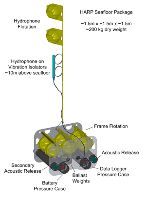
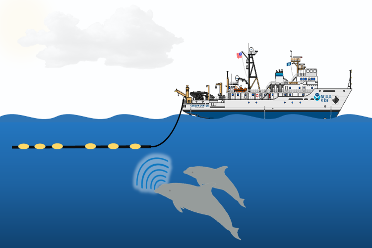
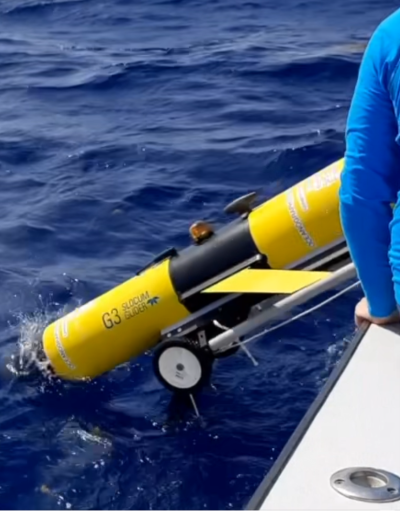

Hardware
SEFSC Passive Acoustic Ecology Program
Seafloor Moored Acoustic Recorders
While ship surveys allow us to study marine mammals over a broad area during a period of a few months, sometimes we want to study their occurrence at specific locations over extended periods of time. We do this by deploying autonomous moored recording instruments that remain on the seafloor for predetermined time periods.
Autonomous recorders include HARPs (High-frequency Acoustic Recording Packages), MARUs (Marine Acoustic Recording Units), and SoundTrapsTM. They are deployed in areas of interest and are capable of recording sounds for up to 18 months at a time. The amount of time that an instrument can record over depends on numerous factors, including the sampling frequency and duty cycle, and how much data storage and battery capacity the instrument has. When it is time to change the battery and data storage disks, we head out to sea to recover the instruments and collect the data recordings. Then we redeploy them to continue the autonomous sampling.
These moored recorders provide data on the spatial distribution of whales and dolphins over time. They are useful for understanding seasonal and longer term occurrence and movement patterns. In some cases, they can be used to estimate the density of whales and dolphins and to inform assessments of abundance and population trends.

Towed Hydrophone Array
While at sea conducting line-transect surveys to look for whales and dolphins (cetaceans), acousticians deploy a towed hydrophone (underwater microphone) array. The array is towed approximately 300 meters behind the ship to detect and localize the sounds produced by toothed whales and dolphins (odontocetes).
The array contains multiple hydrophones, each recording sounds as they arrive. The time differences in sound arrival on each hydrophone allow us to measure the sound’s direction. As the ship continues on its path, the direction to the sounds changes. This allows scientists to localize the source of whistles and echolocation clicks.
These data can be used to estimate the spatial distribution, density, and abundance of toothed whale and dolphin species. They offer complementary data to visual observations for use in marine mammal stock assessments. Additionally, the associated visual and acoustic detections can help us learn what call types are produced by each species.

A hydrophone array being towed behind the ship. This array is towed 300 m behind the ship and usually stays submerged between nine and 12 meters (30-40 feet) depth. We use a custom-built modular array capable of recording a broad range of sound frequencies. Credit: NOAA Fisheries / Amanda Debich
Drifting Acoustic Recorders
Sonobuoys
During ship surveys, we also use expendable DIFAR (Directional Frequency Analysis and Ranging) sonobuoys to detect and record low‐frequency sounds produced by baleen whales (mysticetes). DIFAR sonobuoys contain a hydrophone and a compass in the sensor head and transmit signals from these sensors back to the ship via a VHF radio carrier. The acoustic signal ranges in frequency from 10–4,000 hertz, which is well suited for baleen whale calls that are generally below 1,000 hertz. The two compass signals contain directional information that help us determine where the sounds we hear are coming from and can be used to help us find and localize whales.
In the Gulf of Mexico, Southeast Fisheries Science Center scientists deploy pairs of these sonobuoys to localize the source of calls that are thought to be produced by the endangered Rice’s whale. This provides data to understand what types of calls these whales produce, how often they produce them, and in some cases, how far away we can detect the calls from them. We need this foundational information about what calls Rice’s whales produce to use autonomous moored recorders for longer term studies of their occurrence.
Gliders
Ocean gliders are autonomous underwater vehicles designed to perform repeated dives along predefined trajectories. While at the surface, they use satellite navigation and communication to transmit collected data to shore and, if necessary, receive trajectory adjustments. These platforms are inherently quiet due to their slow movement, minimal flow noise, and limited self-noise generated during maneuvers.
Gliders collect high-resolution hydrographic profiles, with measurements such as temperature, salinity, and oxygen, depending on the sensors equipped. Additionally, they can record raw acoustic data, which is retrievable after the glider's recovery. By navigating diverse bathymetric features and marine mammal habitats, gliders enhance spatial and temporal coverage for passive acoustic monitoring (PAM) of marine mammals.
Many marine mammal species face threats from fisheries entanglements and vessel collisions. However, the impacts of these activities on Caribbean marine mammal populations remain poorly understood due to limited assessment data in this remote region. To address this knowledge gap, scientists from the Southeast Fisheries Science Center, in partnership with the University of the Virgin Islands, deploy PAM-equipped gliders to monitor cetacean occurrence and distribution around Puerto Rico and the U.S. Virgin Islands. This baseline data is essential for enabling resource managers to plan new developments responsibly while minimizing risks to protected species.

A Slocum G3 equipped with a DMON2 being deployed from a boat. This glider collects data around Puerto Rico and the U.S. Virgin Islands. Credit: University of the Virgin Islands / Doug Wilson